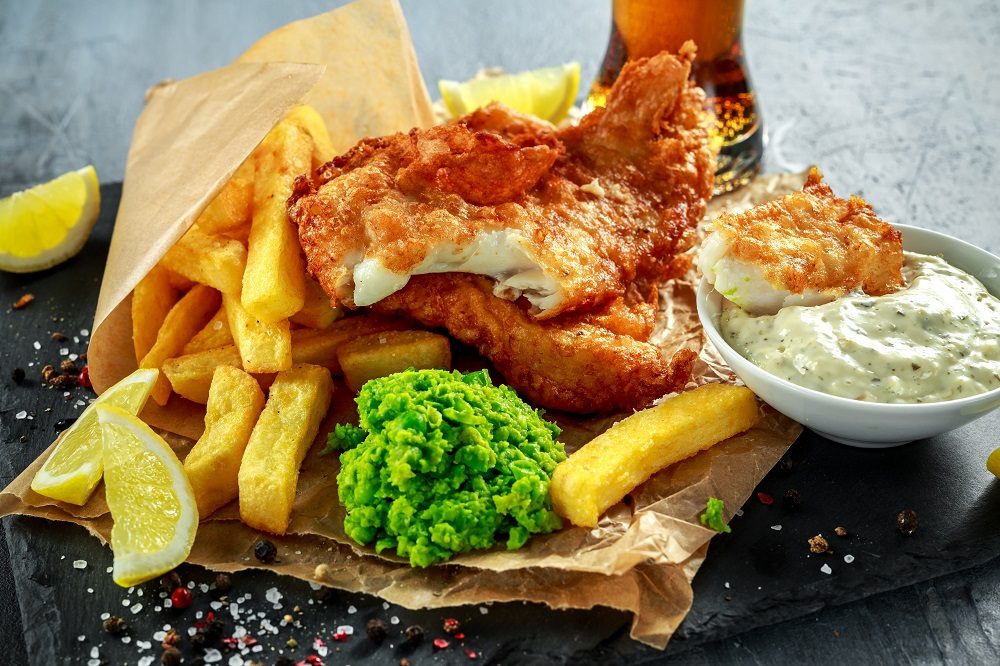
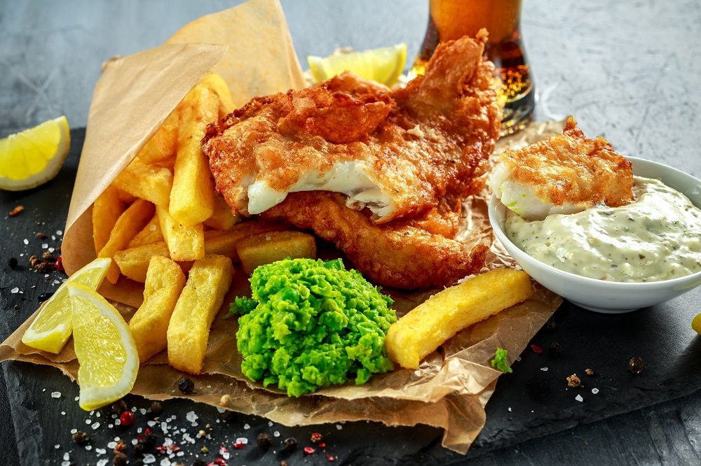

Fish and chips is a popular hot dish consisting of fried fish in crispy batter, served with chips (French fries or wedges). The dish originated in England, where these two components had been introduced from separate immigrant cultures; it is not known who created the culinary fusion that became the emblematic British meal.
Often considered Britain's national dish, fish and chips is a common take-away food in the United Kingdom and particularly English-speaking and Commonwealth nations.
Wikipedia
 
